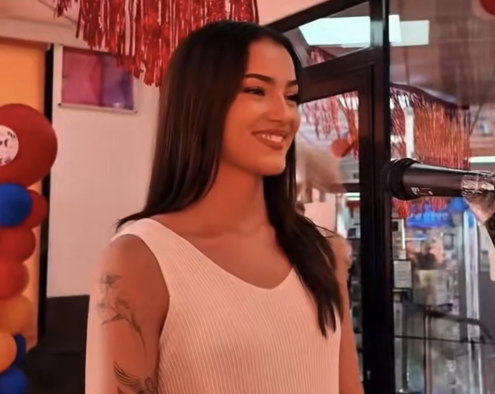
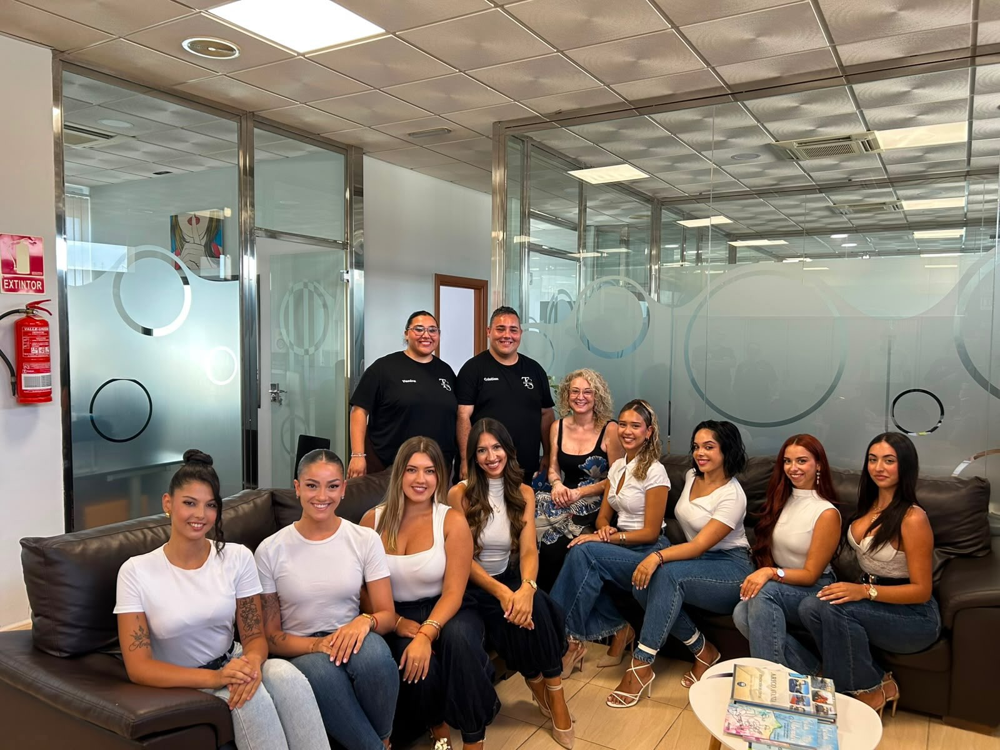
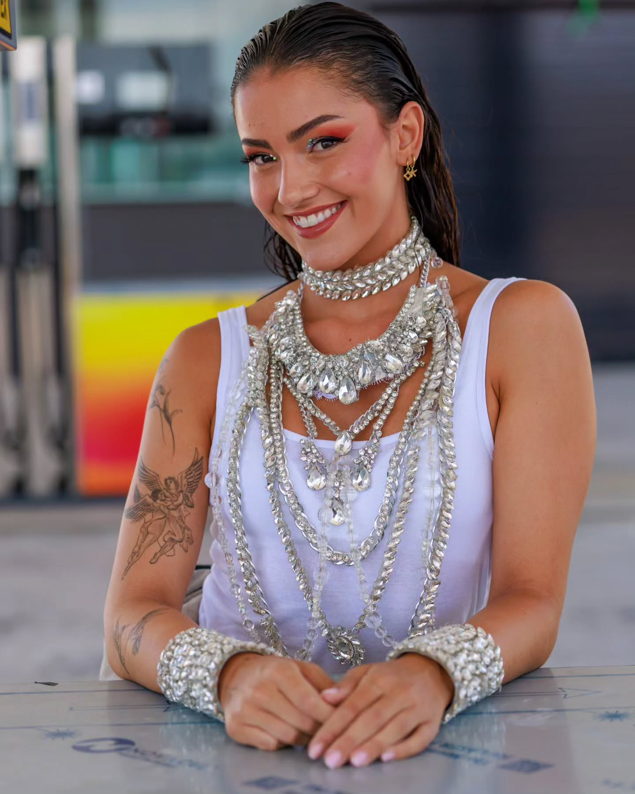

UNIVERSE
SANTA CRUZ
UNIVERSE
SANTA CRUZ
Daniela Martínez Morales, Miss Universe Santa Cruz 2026, continúa sumando nuevas experiencias durante su año de representación. La tinerfeña ha sido seleccionada como una de las diez precandidatas que siguen adelante en el proceso de Team Santana, con el patrocinio de Grupo González Canarias (Estaciones de Servicio Repsol Grupo González), de cara al Carnaval de Santa Cruz de Tenerife 2027.
El proceso servirá para elegir a la mujer que representará finalmente a Team Santana y Grupo González Canarias en la Gala de la Reina del Carnaval de Santa Cruz de Tenerife 2027. Hasta que se produzca esa elección, Daniela continúa en competición junto a las otras nueve aspirantes seleccionadas.
Un proceso que comenzó con 33 aspirantes
El periodo de inscripción para participar en el proceso de selección permaneció abierto del 11 al 31 de julio de 2026.
La primera fase del casting tuvo lugar el 1 de agosto y reunió a un total de 33 aspirantes. Tras esta primera selección, diez de ellas obtuvieron el pase para continuar en el proceso.

Daniela cierra la lista de las diez seleccionadas
La participación de Daniela Martínez en la siguiente fase quedó confirmada oficialmente el 9 de agosto. Su selección cerró la lista definitiva de las diez aspirantes que continúan optando a convertirse en la representante del equipo.
Para nuestra organización, esta nueva etapa llega mientras Daniela continúa ejerciendo como Miss Universe Santa Cruz 2026 y desarrollando su año de representación.
Una primera presentación en Onda Tenerife
El pasado 22 de agosto, Daniela y sus nueve compañeras seleccionadas participaron en una entrevista en Onda Tenerife, una oportunidad para que el público pudiera conocer un poco más a cada una de las aspirantes que continúan en el proceso.

El camino continúa hacia la elección final
Las próximas semanas estarán marcadas por nuevas sesiones fotográficas y presentaciones oficiales que permitirán seguir conociendo a las diez precandidatas.
El proceso culminará el próximo 11 de octubre de 2026, fecha en la que se celebrará la gala final y se conocerá quién será la representante de Team Santana y Grupo González Canarias en la Gala de la Reina del Carnaval de Santa Cruz de Tenerife 2027.

Una nueva experiencia durante su reinado
Desde Miss Universe Santa Cruz seguiremos de cerca esta nueva experiencia de nuestra reina, acompañando su evolución durante las próximas fases y compartiendo las novedades más importantes de su participación.
Daniela afronta así un nuevo reto dentro de un año de representación que continúa abriendo nuevas oportunidades y escenarios.